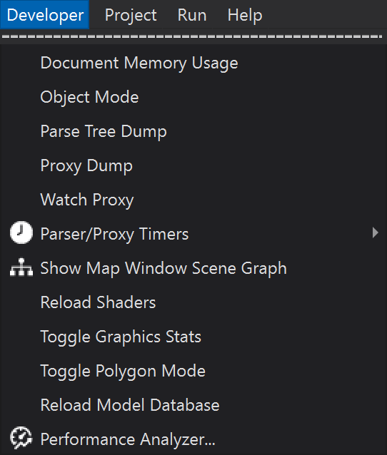

Developer Menu - Wizard¶
The developer menu is enabled from the preferences.
Note
Use of the developer menu is not recommended unless you are a developer. Stability is not guaranteed.
Document Memory Usage - Report the amount of memory in use by documents.
Object Mode - Switch to object edit mode, this will lock text editing until the user returns to text-edit mode.
Parse Tree Dump - Dump the contents of the parse tree to a dialog.
Proxy Dump - Dump the contents of the proxy (object) tree to a dialog.
Watch Proxy - Setup a watch on a proxy value.
- Parser/Proxy Timers - Display a breakdown of execution times for the parser/proxy procedures
Grammar T - the time the
WsfParseDefinitionsspent parsing theWsfGrammarParse T - the time the
WsfParserspent parsing the input filesDeserialize T - the time the
WsfPProxyDeserializespent deserializing the parse treeMerge/GUI T - the time the
ProxyMergespent merging the old and newWsfPProxys/Wizard spent updating its GUIs
Note
These times are in seconds.
Reload Model Database - This will reload all models.txt files, effectively catching edits made to the files.
Show Map Window Scene Graph - Displays a scenegraph for the Map Display. Right clicking on a node will provide an option for detailed information.
Reload Shaders - Reloads all GLSL shaders in use by the application. This will catch live changes to your shader source files.
Toggle Graphics Stats - Toggles the display of frames-per-second and other diagnostic graphics displays.
Toggle Polygon Mode - Toggles the polygon draw mode between filled, wireframe, and vertices.
Performance Analyzer… - Shows how much memory is used by the application.